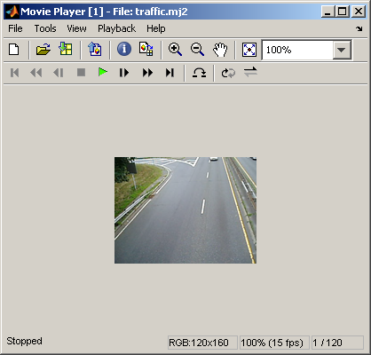
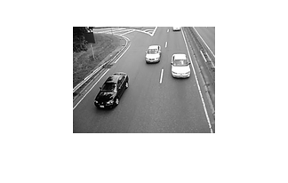
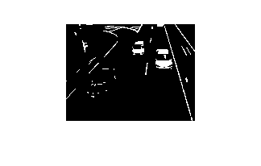
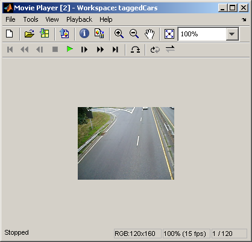

Detecting Cars in a Video of Traffic
You can use Image Processing Toolbox™ to visualize and analyze videos or image sequences. This example uses mmreader (MATLAB®), implay, and other Image Processing Toolbox functions to detect light-colored cars in a video of traffic. Note that mmreader has platform-specific capabilities and may not be able to read the supplied Motion JPEG2000 video on some platforms. See the documentation for mmreader for information on which formats are supported on your platform.
Contents
Step 1: Access Video with MMREADER
The mmreader function constructs a multimedia reader object that can read video data from a multimedia file. See the documentation for mmreader for information on which formats are supported on your platform.
Use mmreader to access the video and get basic information about it.
trafficObj = mmreader('traffic.mj2')
Summary of Multimedia Reader Object for 'traffic.mj2'.
Video Parameters: 15.00 frames per second, RGB24 160x120.
120 total video frames available.
The get method provides more information on the video such as its duration in seconds.
get(trafficObj)
General Settings:
Duration = 8
Name = traffic.mj2
Path = B:\matlab\toolbox\images\imdemos
Tag =
Type = VideoReader
UserData = []
Video Settings:
BitsPerPixel = 24
FrameRate = 15
Height = 120
NumberOfFrames = 120
VideoFormat = RGB24
Width = 160
Step 2: Explore Video with IMPLAY
Explore the video in implay.
implay('traffic.mj2');
 Step 3: Develop Your Algorithm
When working with video data, it can be helpful to select a representative frame from the video and develop your algorithm on that frame. Then, this algorithm can be applied to the processing of all the frames in the video.
For this car-tagging application, examine a frame that includes both light-colored and dark-colored cars. When an image has many structures, like the traffic video frames, it is useful to simplify the image as much as possible before trying to detect an object of interest. One way to do this for the car tagging application is to suppress all objects in the image that are not light-colored cars (dark-colored cars, lanes, grass, etc.). Typically, it takes a combination of techniques to remove these extraneous objects.
One way to remove the dark-colored cars from the video frames is to use the imextendedmax function. This function returns a binary image that identifies regions with intensity values above a specified threshold, called regional maxima. All other objects in the image with pixel values below this threshold become the background. To eliminate the dark-colored cars, determine the average pixel value for these objects in the image. (Use rgb2gray to convert the original video from RGB to grayscale.) You can use the pixel region tool in implay to view pixel values. Specify the average pixel value (or a value slightly higher) as the threshold when you call imextendedmax. For this demo, set the value to 50.
darkCarValue = 50; darkCar = rgb2gray(read(trafficObj,71)); noDarkCar = imextendedmax(darkCar, darkCarValue); imshow(darkCar) figure, imshow(noDarkCar) 
In the processed image, note how most of the dark-colored car objects are removed but many other extraneous objects remain, particularly the lane-markings. The regional maxima processing will not remove the lane markings because their pixel values are above the threshold. To remove these objects, you can use the morphological function imopen. This function uses morphological processing to remove small objects from a binary image while preserving large objects. When using morphological processing, you must decide on the size and shape of the structuring element used in the operation. Because the lane-markings are long and thin objects, use a disk-shaped structuring element with radius corresponding to the width of the lane markings. You can use the pixel region tool in implay to estimate the width of these objects. For this demo, set the value to 2.
sedisk = strel('disk',2);
noSmallStructures = imopen(noDarkCar, sedisk);
imshow(noSmallStructures)
To complete the algorithm, use regionprops to find the centroid of the objects in noSmallStructures (should just be the light-colored cars). Use this information to position the tag on the light-colored cars in the original video.
Step 4: Apply the Algorithm to the Video
The car-tagging application processes the video one frame at a time in a loop. (Because a typical video contains a large number of frames, it would take a lot of memory to read and process all the frames at once.)
A small video (like the one in this example) could be processed at once, and there are many functions that provide this capability. For more information, see the Documentation.
For faster processing, preallocate the memory used to store the processed video.
nframes = get(trafficObj, 'NumberOfFrames'); I = read(trafficObj, 1); taggedCars = zeros([size(I,1) size(I,2) 3 nframes], class(I)); for k = 1 : nframes singleFrame = read(trafficObj, k); % Convert to grayscale to do morphological processing. I = rgb2gray(singleFrame); % Remove dark cars. noDarkCars = imextendedmax(I, darkCarValue); % Remove lane markings and other non-disk shaped structures. noSmallStructures = imopen(noDarkCars, sedisk); % Remove small structures. noSmallStructures = bwareaopen(noSmallStructures, 150); % Get the area and centroid of each remaining object in the frame. The % object with the largest area is the light-colored car. Create a copy % of the original frame and tag the car by changing the centroid pixel % value to red. taggedCars(:,:,:,k) = singleFrame; stats = regionprops(noSmallStructures, {'Centroid','Area'}); if ~isempty([stats.Area]) areaArray = [stats.Area]; [junk,idx] = max(areaArray); c = stats(idx).Centroid; c = floor(fliplr(c)); width = 2; row = c(1)-width:c(1)+width; col = c(2)-width:c(2)+width; taggedCars(row,col,1,k) = 255; taggedCars(row,col,2,k) = 0; taggedCars(row,col,3,k) = 0; end end
Step 5: Visualize Results
Get the frame rate of the original video and use it to see taggedCars in implay.
frameRate = get(trafficObj,'FrameRate');
implay(taggedCars,frameRate);
